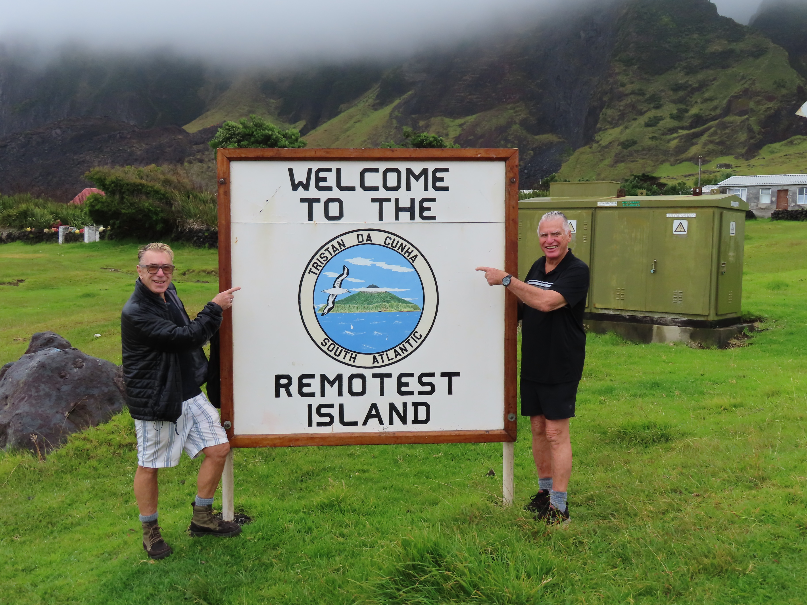
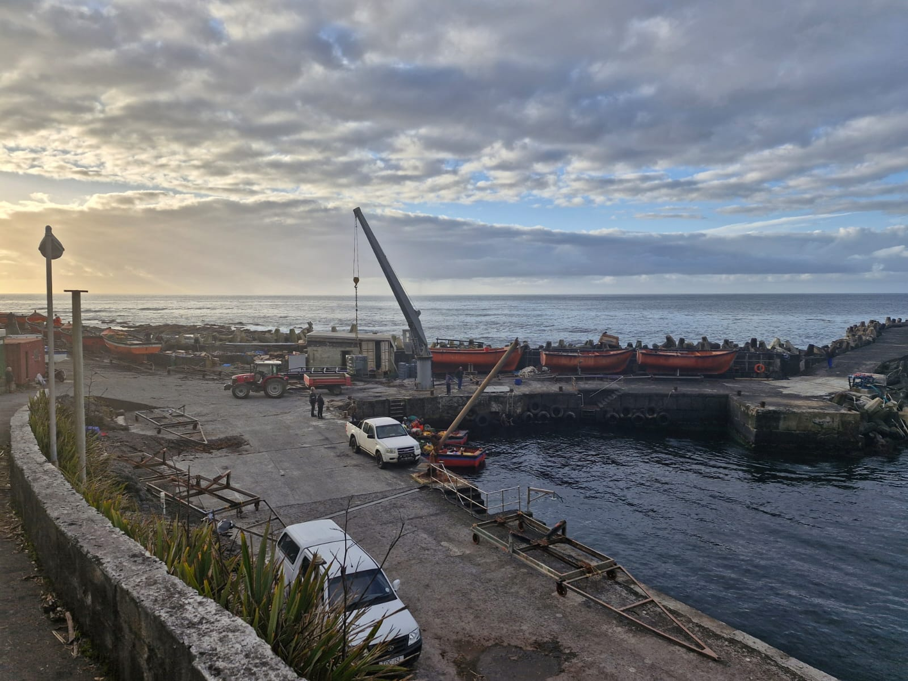

Stories from the Edge of the World

No Airstrip, No Rush
You can't just fly into Tristan da Cunha: boats are the only way of getting there or leaving.
Throughout the year, vessels arrive at the island on repeat trips - they deliver parcels, letters and occasionally even new friends to the community.
